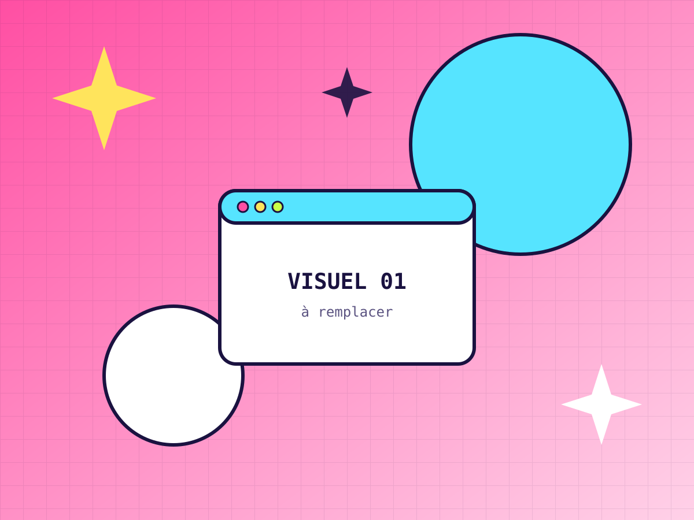
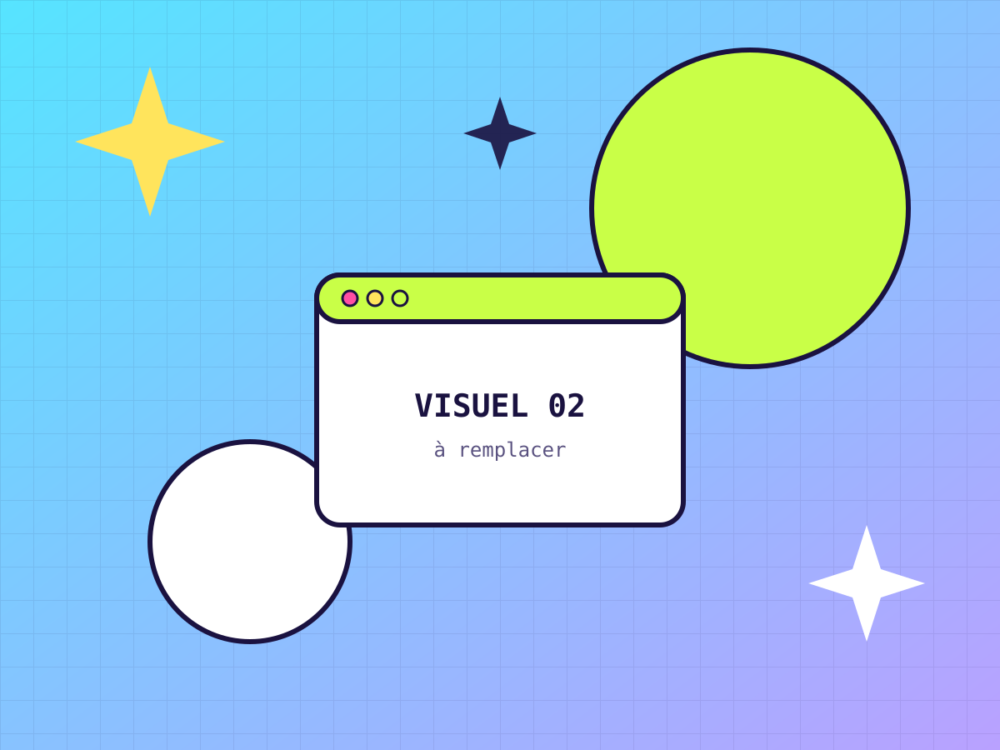
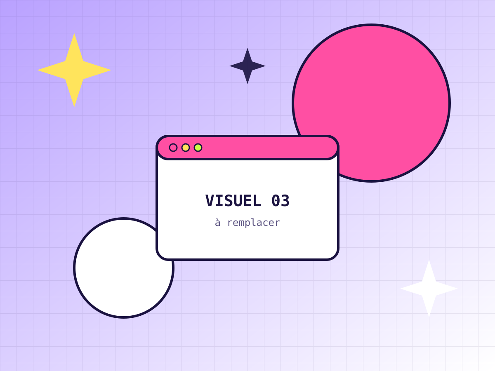
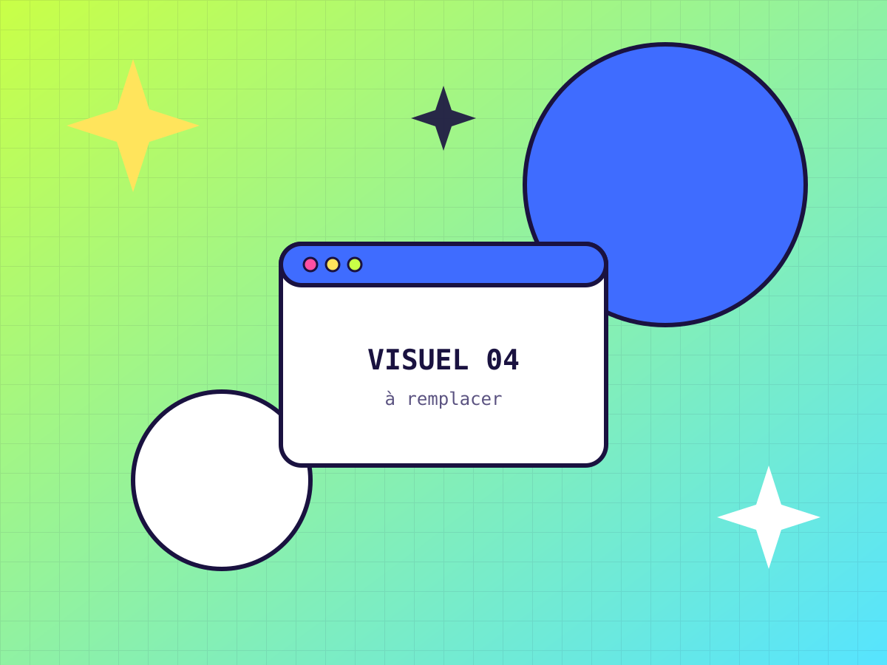
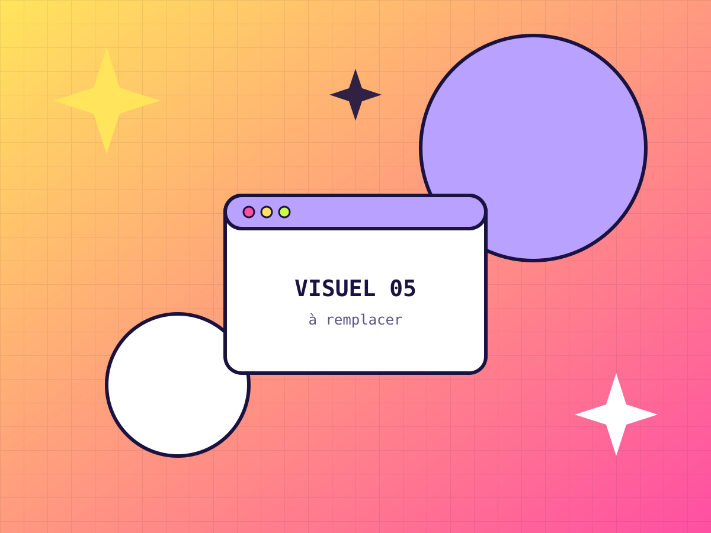
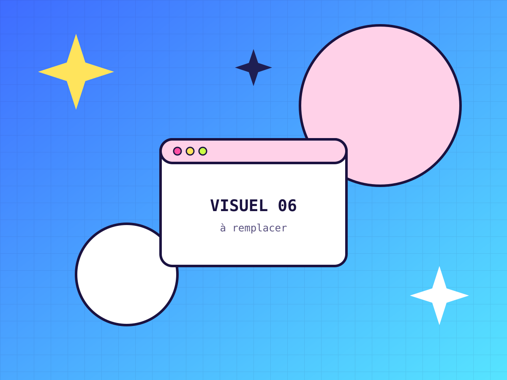

Portfolio
Mes projets
Projets d'école, projets personnels et expériences de stage : voici ce que je sais déjà faire. Filtrez par réseau ou par type de contenu.

Projet d'école · Instagram
Lancement d'une marque
Stratégie de lancement et calendrier éditorial sur 3 mois.
Voir le projet →
Projet perso · TikTok
Série de vidéos courtes
Formats récurrents pensés pour la rétention et le partage.
Voir le projet →
Stage · LinkedIn
Marque employeur
Ligne éditoriale pour attirer les talents et valoriser l'équipe.
Voir le projet →
Projet perso · Instagram
Carrousels pédagogiques
Des contenus éducatifs sauvegardés et partagés par la communauté.
Voir le projet →
Projet d'école · Stratégie
Audit & plan social media
Analyse de l'existant, benchmark et feuille de route à 6 mois.
Voir le projet →
Stage · TikTok
Campagne UGC
Mobilisation de créateurs et contenus générés par les utilisateurs.
Voir le projet →Un projet vous parle ? Je serais ravi·e d'en discuter en entretien.